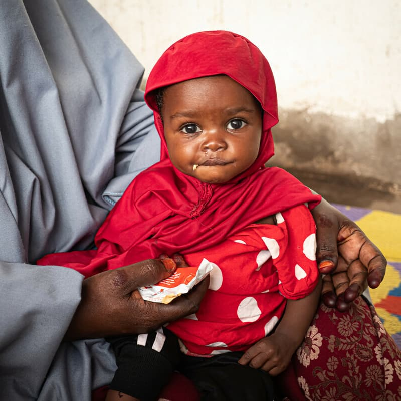

Education · Predictive modeling
Enrollment Forecasting for Academic Scheduling
How accurately can historical course-section records predict future enrollment, and what are the limits of those predictions?
Read research case study →Quantitative research · Statistical modeling · Educational systems
I am a Business Analytics graduate and higher education analytics professional exploring how statistical and computational methods can help us understand institutional and social systems. My interests include longitudinal analysis, model reliability, causal inference, and responsible data-driven decisions.
These projects show my progression from applied analytics toward methodological questions about prediction, evidence, and decision-making.
How accurately can historical course-section records predict future enrollment, and what are the limits of those predictions?
Read research case study →How are household characteristics associated with housing expenditures and affordability?
Read research case study →
What patterns in service access and living conditions emerge from data on internally displaced populations?
Read research case study →MS in Business Analytics, Mercy University (4.0 GPA); undergraduate Industrial Engineering research at Universidad Católica de Santa María in Peru.
Read my background →In Mercy University’s Registrar’s Office, I work on academic scheduling, enrollment analysis, reporting, and process automation. Those experiences motivate research questions about measurement, missing data, and institutional decision-making.
Explore experience →